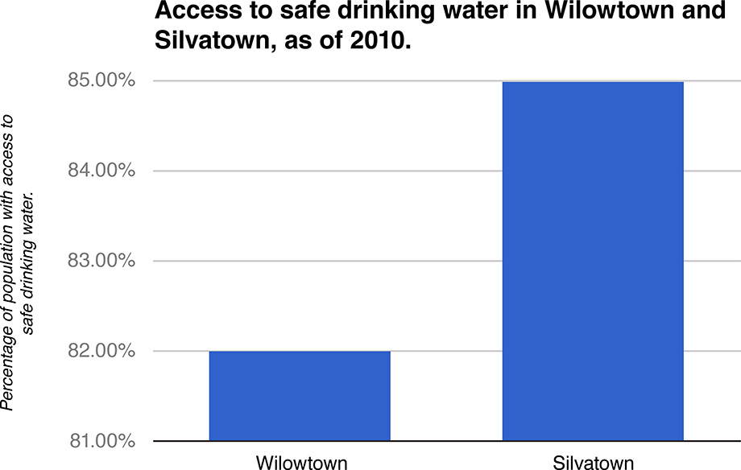
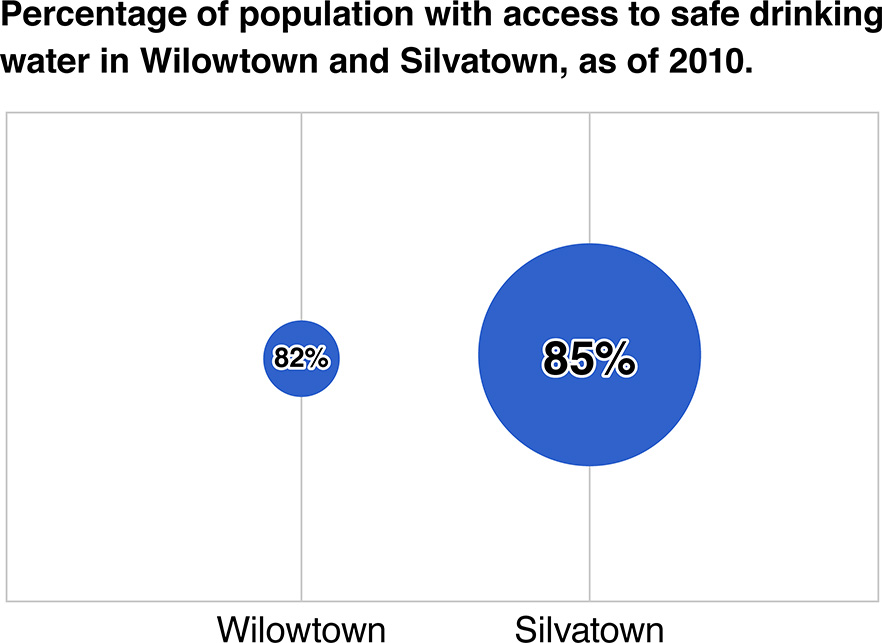
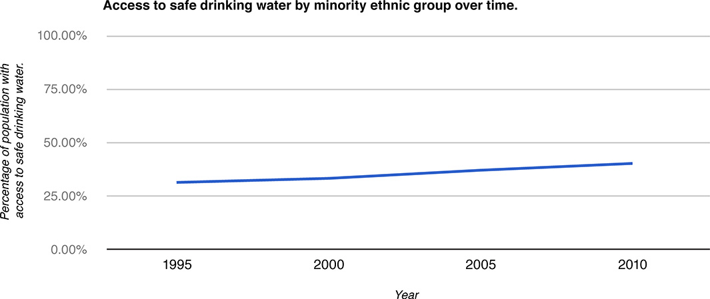
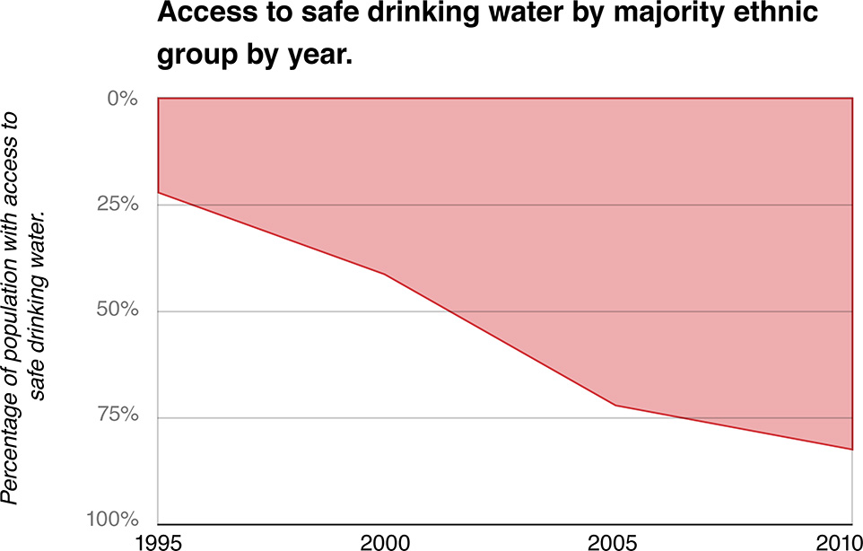

While manipulation of the facts or deception of the reader is usually unintentional in the human rights realm, accidentally misleading visualizations may be deceptive.
The research team conducted a series of user studies to test the effect of common visual distortions on audience interpretation of the visualization message — and to determine how severe the different distortion techniques are in terms of deceiving the user.
The study results suggest that when presented with a deceptive visualization which intentionally exaggerated the message participants did indeed perceive the underlying message in its exaggerated form. Similarly, participants presented with a visualization that suggested a reversal of the message to be drawn from the underlying data were also deceived at a very high rate.
The research team tested the following distortion techniques:

This chart shows the percentage of population with access to safe drinking water in two towns - Wilowtown and Silvatown, as of the year 2010. The Y-axis is truncated, i.e., it starts from 80% instead of 0%, hence, exaggerating the comparison.

The chart shows the percentage of population with access to safe drinking water in two towns - Wilowtown and Silvatown, as of the year 2010. Here, the quantitative information is not directly mapped to the area of the bubbles, hence, exaggerating the comparison.

The chart shows the percentage of minority ethnic group population with access to safe drinking water in Silvatown over time. The aspect ratio of the chart has been distorted by stretching the X-axis. Here, the effect of improvement has been understated.

The chart shows the percentage of majority ethnic group population with access to safe drinking water in Silvatown by time. Here, the Y-axis has been inverted, hence, creating an illusion that the access to safe drinking water has declined.
Source: How Deceptive are Deceptive Visualizations?: An Empirical Analysis of Common Distortion Techniques, Pandey, et al., 2015